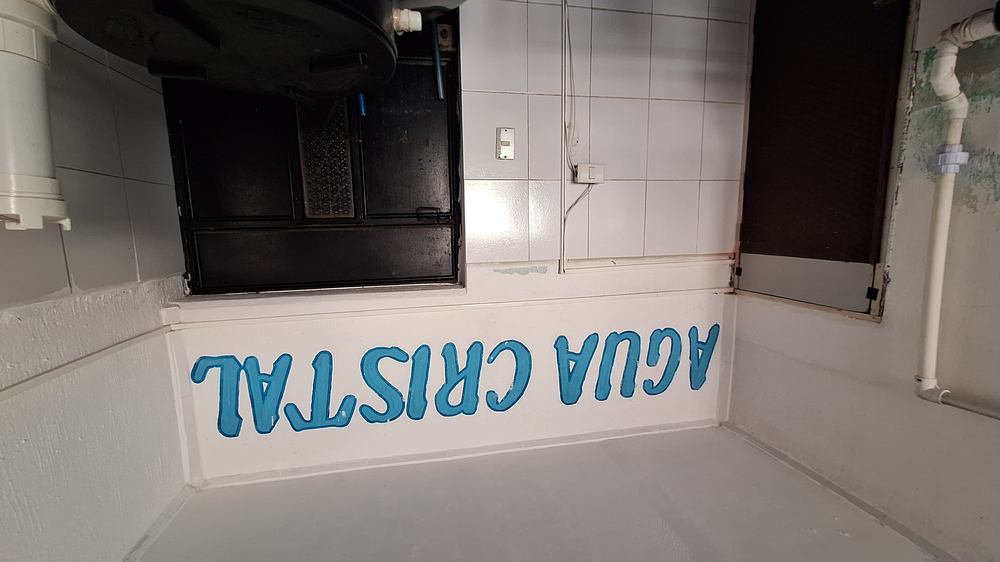

¡Nuestros Productos!

Entrega a domicilio
Q10.00
Incluye instalación

Retiro en tienda
Q9.00
Todas las marcas
Rellenamos garrafones: Agua Pura Salvavidas, Scandia, Carrera, marca genérica y Agua Cristal.
Agua purificada de confianza para tu hogar y tu negocio, en Chinautla — desde 2008
Lunes a sábado, 8:00 a.m. – 7:00 p.m.
Pide tu garrafón por WhatsApp
Q10.00
Incluye instalación
Q9.00
Todas las marcas
Rellenamos garrafones: Agua Pura Salvavidas, Scandia, Carrera, marca genérica y Agua Cristal.


Estrenamos nuestro sitio web para que conozcas más sobre nuestro servicio, promociones y novedades.
Síguenos también en nuestra bitácora semanal: ver blog


Purificadora Agua Cristal es un negocio familiar dedicado al rellenado de garrafones de agua purificada, ubicado en la colonia El Sausalito, zona 6, Chinautla, operando desde 2008.
Misión: Brindar agua purificada de calidad y un servicio confiable a las familias y negocios de Chinautla.
Visión: Ser la purificadora de referencia en la zona, reconocida por su rapidez, precio justo y atención cercana.
📍 Dirección:
3ª calle, Local 1-C, Col. El Sausalito, Zona 6, Chinautla (una cuadra abajo de la Municipalidad)
🕗 Horario:
Lunes a sábado, 8:00 a.m. – 7:00 p.m.
☎️ Teléfono: 4355-7709
💬 WhatsApp: +502 3177-9389
✉️ Correo: aguacristaloficialgt@gmail.com
Q10.00 con entrega a domicilio e instalación, o Q9.00 si lo retiras en tienda.
Agua Pura Salvavidas, Scandia, Carrera, marca genérica y Agua Cristal.
Lunes a sábado, de 8:00 a.m. a 7:00 p.m.
Sí, con instalación incluida sin costo adicional.
3ª calle, Local 1-C, Colonia El Sausalito, Zona 6, Chinautla, una cuadra abajo de la Municipalidad.